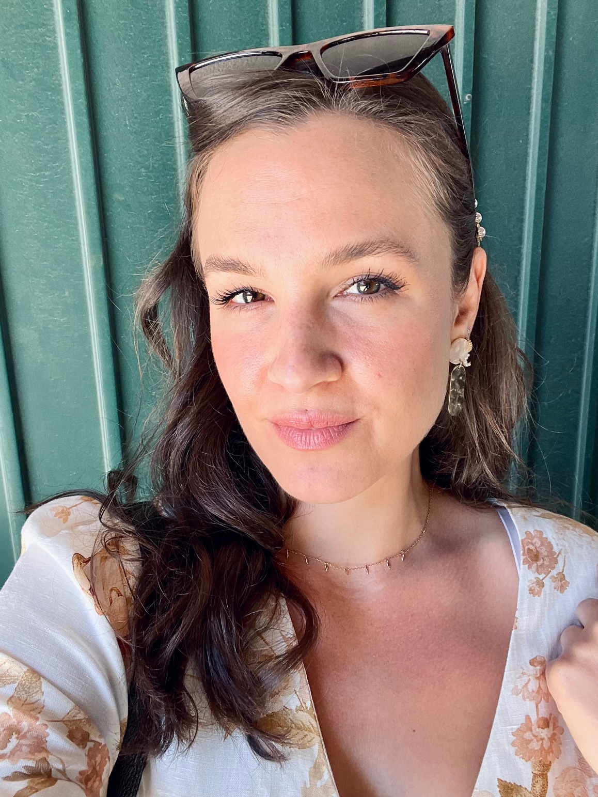

I am a Front-end developer based in Vienna, Austria. I enjoy helping designers and companies bring their ideas into real life. I am looking forward to continuing my developer career with a job in a junior web developer position. If you think I’d be a good match for your projects, contact me!
